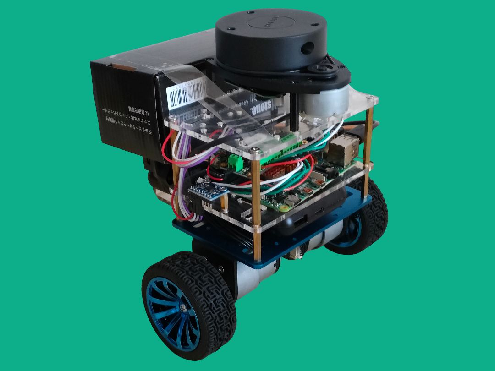

Restricted Access — Crew Record 001

ID VERIFIED
Gavin Kenny
Robotics Engineer
Building intelligent robotic systems with ROS2, computer vision, and embedded hardware. From pick-and-place robot arms to EMG-controlled prosthetics — hands-on engineering, one project at a time.
DESIGNATIONRobotics Engineer
CORE SYSTEMSROS2 / Embedded C++ / CV
ACTIVE PROJECTS9 logged
CLEARANCEGITHUB / YOUTUBE LINKED
Certified Systems
Skills & Stack
ROS / ROS2
Python
C / C++
Computer Vision
YOLO / ML
Raspberry Pi
Docker
Embedded Systems
PID Control
EMG / Biosensors
Voyage Record
Mission Log — Projects

Robot Pose Control
Robot arm pose control using YOLOv11 pose estimation to mirror human body movements in real time.
WATCH DEMO →

Slambot
Autonomous mobile robot using SLAM for real-time mapping and navigation in unknown environments.

Collaborative Dual Arm Robot
Final year project featuring coordinated dual-arm robot manipulation for collaborative assembly tasks.
WATCH DEMO →

ROS UR5 Pick & Place
UR5 robotic arm performing autonomous pick and place operations in ROS using MoveIt.
WATCH DEMO →

EMG Robotic Hand
Robotic hand controlled by EMG biosignals with 10BaseT1S communication between microcontrollers. Built at Microchip Technology.
WATCH DEMO →

Edge Object Detection
Real-time object detection on Raspberry Pi with Intel Neural Compute Stick using YOLOv3 Tiny and the COCO dataset.
WATCH DEMO →

Ball & Beam PID Controller
Classic control systems project using a PID controller to balance a ball on a beam with real-time sensor feedback.
WATCH DEMO →

Micromouse
Autonomous maze-solving robot with real-time obstacle avoidance using IR sensors and custom pathfinding.
WATCH DEMO →

Thermal Camera
Thermal imaging with Panasonic AMG8833 on Raspberry Pi. Resolution enhanced from 8×8 to full display via bicubic interpolation.
VIEW REFERENCE →
Open Channel
Transmission
Let's Connect
Interested in collaborating or discussing robotics? Open a channel below.